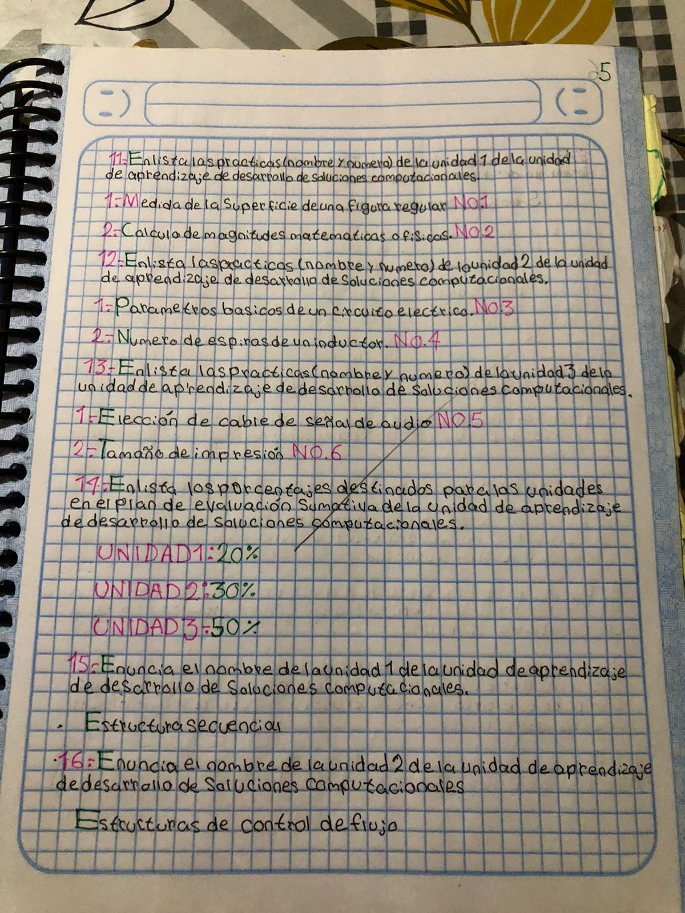

ENCUADRE DSC
El encuadre del Desarrollo de Soluciones Computacionales (DSC) es un proceso fundamental en la ingeniería de software que incluye varias etapas importantes:
- Requisitos: Recolección y análisis de las necesidades del usuario y del sistema.
- Diseño: Planificación y estructuración de la solución, incluyendo diagramas de arquitectura y modelado.
- Desarrollo: Implementación del diseño utilizando lenguajes de programación y herramientas de desarrollo.
- Pruebas: Verificación y validación del software para asegurar que cumple con los requisitos y está libre de errores.
- Implementación: Despliegue de la solución en un entorno de producción.
- Mantenimiento: Actualización y mejora continua del software después de su lanzamiento.
TEORIA CUADERNO

La teoría del cuaderno es una metodología que enfatiza la importancia de documentar cada paso del desarrollo de soluciones computacionales. Esta documentación ayuda a:
- Rastrear el progreso y los cambios realizados en el proyecto.
- Facilitar la comunicación entre los miembros del equipo.
- Garantizar que todos los aspectos del proyecto están bien documentados y pueden ser referenciados en el futuro.